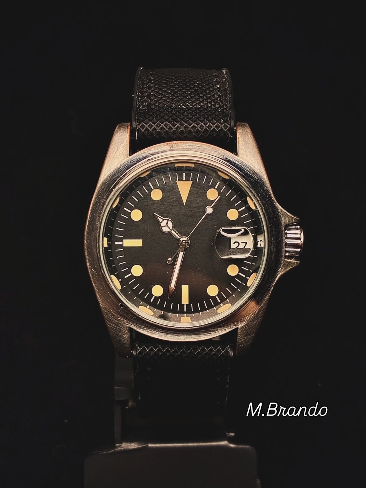
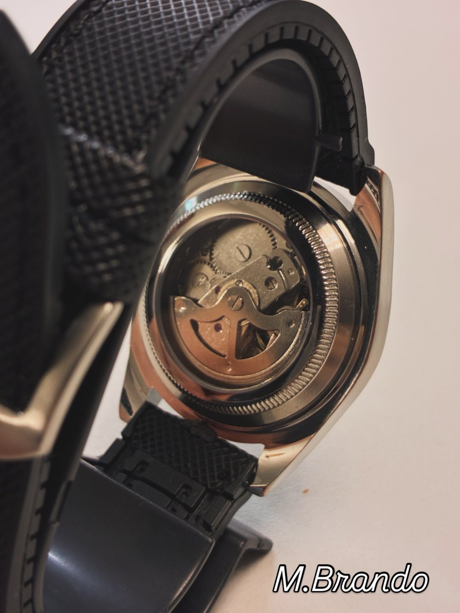
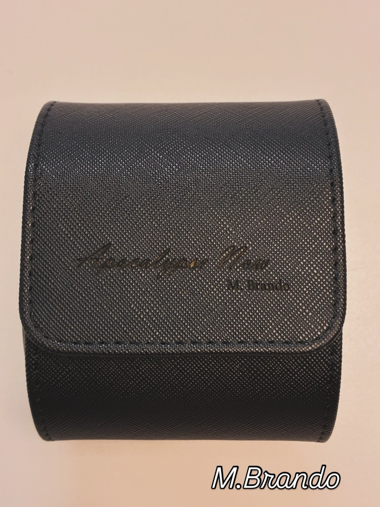

RELÓGIOS À VENDANOSSAS INDICAÇÕESCURADORIA INDEPENDENTERELÓGIOS MARCAM MOMENTOS
01 — RELÓGIOS À VENDA
Relógios à venda.
Sete peças do nosso acervo. Toque para ver fotos e detalhes; converse com a Legacy para comprar.
Pagamento e entrega
Preços à vista no Pix. Aceitamos parcelamento em até 10x no cartão de crédito, com acréscimo da maquininha. Entrega grátis em SP. Para os demais locais, frete a combinar.
VER AS 4 FOTOS ＋
01 / CRIAÇÃO ARTESANAL
Relógio mecânico Homenagem Apocalypse Now M. Brando
R$ 890,00à vista no PixABRIR GALERIA ↗
4 fotos da peça. Deslize para ver todas.
1 / 4

2 / 4

3 / 4

4 / 4
Uma breve história
Estilo clássico e robusto, perfeito para quem busca uma peça que foi montada individualmente de forma artesanal.
Modelo raro, em ótimo estado, funcionando perfeitamente e revisado em 2026, conforme informação do proprietário.
Relógio mecânico montado individualmente de forma artesanal
Diâmetro: 40 mm
Espessura: 14 mm
Peso: 110 g
Cristal mineral
Pulseira de borracha
Máquina chinesa DD119
Reserva de marcha: 36 horas
Estojo personalizado incluído
Especificações informadas pelo proprietário
Ótimo estado e funcionamento perfeito, informados pelo proprietário
Revisão realizada em 2026, informada pelo proprietário
Pagamento e entrega
Preços à vista no Pix. Aceitamos parcelamento em até 10x no cartão de crédito, com acréscimo da maquininha. Entrega grátis em SP. Para os demais locais, frete a combinar.
Modelo raro, em ótimo estado e funcionando perfeitamente. Revisado em 2026, conforme informação do proprietário.
A família Seiko 5 nasceu em 1963 com a proposta de oferecer relógios automáticos para o dia a dia. Este exemplar, com dia e data e caixa de linhas marcantes, expressa o lado mais despretensioso da relojoaria japonesa: funcionalidade e personalidade num só objeto. Referência e ano desta unidade ainda precisam de confirmação.
Modelo raro, em ótimo estado, funcionando perfeitamente e revisado em 2026, conforme informação do proprietário.
Calendário de dia e data visível no mostrador
Referência, calibre e ano desta unidade: a confirmar
Ótimo estado e funcionamento perfeito, informados pelo proprietário
Revisão realizada em 2026, informada pelo proprietário
Pagamento e entrega
Preços à vista no Pix. Aceitamos parcelamento em até 10x no cartão de crédito, com acréscimo da maquininha. Entrega grátis em SP. Para os demais locais, frete a combinar.
Modelo raro, em ótimo estado e funcionando perfeitamente. Revisado em 2026, conforme informação do proprietário.
Omax é um nome que aparece em muitos relógios mecânicos clássicos, especialmente entre colecionadores de peças de época. Nesta unidade, o mostrador claro, os índices dourados e a caixa de desenho geométrico fazem o trabalho visual. A inscrição de 17 rubis remete ao tradicional uso de pedras sintéticas para reduzir atrito no movimento.
Modelo raro, em ótimo estado, funcionando perfeitamente e revisado em 2026, conforme informação do proprietário.
Inscrição “17 Jewels” no mostrador
Mostrador claro e caixa de desenho geométrico
Calibre, referência e datação: a confirmar
Ótimo estado e funcionamento perfeito, informados pelo proprietário
Revisão realizada em 2026, informada pelo proprietário
Pagamento e entrega
Preços à vista no Pix. Aceitamos parcelamento em até 10x no cartão de crédito, com acréscimo da maquininha. Entrega grátis em SP. Para os demais locais, frete a combinar.
Modelo raro, em ótimo estado e funcionando perfeitamente. Revisado em 2026, conforme informação do proprietário.
Os relógios retangulares atravessaram décadas sem perder relevância. Nesta interpretação da Seiko, o mostrador preto, os algarismos romanos e a caixa alongada conversam com a tradição dos relógios de vestir. O movimento a quartzo privilegia a praticidade, sem abrir mão da estética clássica.
Modelo raro, em ótimo estado, funcionando perfeitamente e revisado em 2026, conforme informação do proprietário.
Identificado como quartzo pelo proprietário
Mostrador preto com algarismos romanos
Referência, calibre, dimensões e materiais: a confirmar
Ótimo estado e funcionamento perfeito, informados pelo proprietário
Revisão realizada em 2026, informada pelo proprietário
Pagamento e entrega
Preços à vista no Pix. Aceitamos parcelamento em até 10x no cartão de crédito, com acréscimo da maquininha. Entrega grátis em SP. Para os demais locais, frete a combinar.
Modelo impecável, JDM full set, com caixas, manuais, elos e cartão de compra japonês. Versão destinada ao mercado japonês, considerada rara no Brasil pelo proprietário.
A família Seiko 5 começou em 1963; a linha Sports veio em 1968 e ganhou uma nova geração em 2019. O SBSA013 faz parte dessa continuidade japonesa. O verde do mostrador e do aro dá presença ao desenho esportivo, enquanto o calibre 4R36 mantém o interesse mecânico.
Estado impecável e conjunto full set, conforme informação do proprietário.
Referência SBSA013 informada pelo proprietário
Full set informado pelo proprietário: caixas, manuais, elos e cartão de compra japonês
Especificação do modelo: calibre automático 4R36, com corda manual e parada de segundos
Especificação do modelo: calendário de dia e data, 24 rubis e reserva aproximada de 41 horas
Especificação do modelo: caixa de aço, 42,5 mm de largura e vidro Hardlex
Especificações de catálogo não equivalem a ensaio desta unidade
Pagamento e entrega
Preços à vista no Pix. Aceitamos parcelamento em até 10x no cartão de crédito, com acréscimo da maquininha. Entrega grátis em SP. Para os demais locais, frete a combinar.
Relógio usado apenas duas vezes, impecável e em estado de novo, conforme informação do proprietário. Não acompanha caixa nem manual. Possui comprovante de compra recuperado na Vivara. O proprietário informa ótima procedência e relata que a caixa foi perdida durante uma mudança de casa.
Na linha I.N.O.X. Automatic, a caixa de presença marcante, o mostrador escuro e o bracelete metálico formam um conjunto sóbrio. O fundo transparente permite observar o mecanismo. A referência exata desta unidade ainda precisa ser confirmada.
Usado duas vezes. Impecável, em estado de novo, conforme informação do proprietário.
Modelo I.N.O.X. Automatic informado pelo proprietário
Usado apenas duas vezes, segundo o proprietário
Não acompanha caixa nem manual
Comprovante de compra recuperado na Vivara, informado pelo proprietário
Caixa perdida durante mudança de casa, segundo o proprietário
Bracelete metálico e fundo transparente visíveis nas fotos
Referência, calibre e medidas desta unidade: a confirmar
Pagamento e entrega
Preços à vista no Pix. Aceitamos parcelamento em até 10x no cartão de crédito, com acréscimo da maquininha. Entrega grátis em SP. Para os demais locais, frete a combinar.
Modelo raro, em ótimo estado e funcionando perfeitamente. Revisado em 2026, conforme informação do proprietário.
Nesta peça, o mostrador radial, os algarismos expressivos e a inscrição “Made in USSR” guardam a linguagem da relojoaria soviética. O interesse está no desenho e na memória de uma época. A inscrição de 23 rubis pode ser lida no mostrador; o calibre e o ano específicos desta unidade ainda precisam de confirmação.
Modelo raro, em ótimo estado, funcionando perfeitamente e revisado em 2026, conforme informação do proprietário.
Inscrições “23 Jewels” e “Made in USSR” no mostrador
Pulseira em tom marrom nas fotografias
Calibre, referência e datação: a confirmar
Ótimo estado e funcionamento perfeito, informados pelo proprietário
Revisão realizada em 2026, informada pelo proprietário
Pagamento e entrega
Preços à vista no Pix. Aceitamos parcelamento em até 10x no cartão de crédito, com acréscimo da maquininha. Entrega grátis em SP. Para os demais locais, frete a combinar.
A Legacy pode receber comissão em compras elegíveis, sem custo adicional para você. Preços, estoque, frete e condições de compra são definidos pelo vendedor e podem mudar. A Legacy não controla o conteúdo dos links externos. Informações e destinos podem ser alterados pelo anunciante. Confira os dados no Mercado Livre antes de comprar.
LEGACY CURADORIA
Alguns relógios merecem novas histórias.
Uma seleção de relógios para quem escolhe com personalidade.